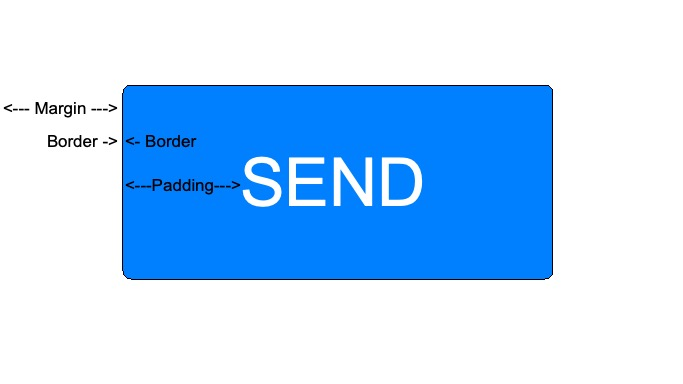

So, what is the difference between border, margin, and padding in CSS?
It helps to use an analogy to explain the differences. Imagine a framed photograph on the wall like this:
The actual photograph inside the frame is the element.
The black frame is the border.
The white space between the photograph and the frame is the padding.
The wall space outside of the black frame is the margin. It’s the space between the frame of this photograph and the next thing on the wall.

Now let's apply that to the SEND button on a website.
The word "send" is the element. The edge of the rectangular button is the border. The blue space between the word "send" and the border is the padding. The white space between the border and the edge of the page is the margin.
I hope that makes everything clear.